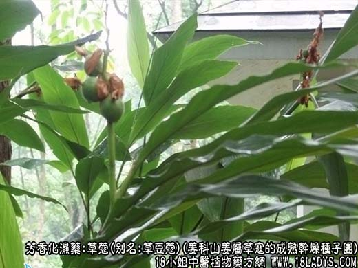
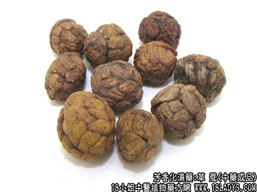
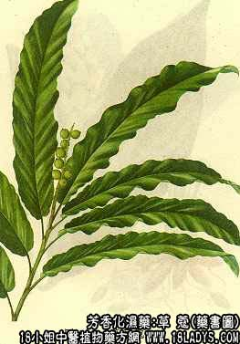

本品为较常用中药。始见于《开宝本草》实际为豆蔻。而真正的草豆蔻在《本草纲目》才有记载。
别名：草豆蔻、草叩、草叩仁。
来源：为姜科山姜属多年生草本植物草寇的成熟干燥种子团。野生或栽培。
产地：主产于广东海南岛，湛江地区，广西的玉林，钦州，梧州地区。
性状鉴别：呈不规则的球形团块，由30～200余粒种子紧密集结而成，被黄白色隔膜分为三个自然瓣，隔膜处略下凹呈纵沟状，两端集合点略呈三角形，直径约1～厘米。表面灰棕色，种子集结坚不易脱落。个体种子呈不规则的颗粒状，上面有一条明显的纵沟纹。质坚硬，破开后可见白色众人。气味酸，味辛辣微有凉香感。以子粒饱满，紧结者为佳。
主要成分：含挥发油，其中主要为豆蔻素及由姜素。
功效与作用：1、健胃止吐。2、祛寒止泻，有收敛作用。
炮制：捣碎生用。
性味：辛温。
归经：入脾，胃经。
功能：健脾燥湿，开胃止呕。
主治：脾胃虚弱，湿郁寒滞引起的不思饮食，呕逆脘痛。
临床应用：1、治胃寒腹痛呕吐、唇舌淡白、口泛清涎、食欲不振（相当于某些类型急性胃炎、溃疡病，可用本品6g，配吴茱萸、延胡索、高良姜、香附各6g，水煎服，有散寒、止痛、止呕作用。
2、治虚寒久泻（慢性菌痢、慢性结肠炎）用煨草寇、配煨木香、煨诃子，方如草豆蔻汤。
用量：1～2g，入丸散剂服较好。
处方举例：草豆蔻汤：煨草寇3g，煨木香3g，煨诃子2.4g，条芩9g，火炭母9g，水煎服。
注：云南云山州，思茅等地也有生产但品质不如两广产品。